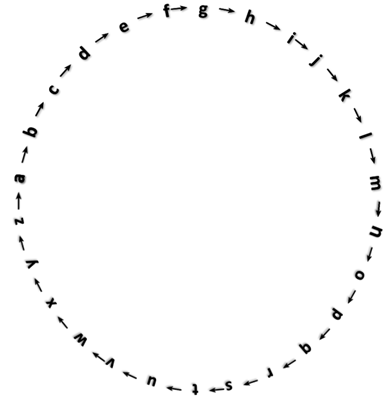
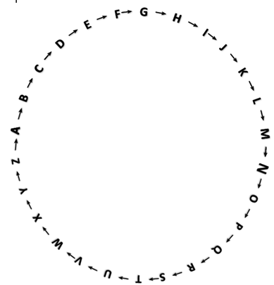

你有没有想过，可以把一句话变成别人看不懂的“密文”？偏移量加密就是一种最简单的加密方法，就像让每个字母在字母表里向前“走几步”。
26个英文字母按顺序排成一圈（a→b→c→……→z→a）。偏移量加密就是让每个字母沿着这个圈向前走固定步数，走到的位置就是加密后的字母。


例如，让字母向前走3步：a走3步到d，b走3步到e，……，x走3步到a，y走3步到b，z走3步到c。大写字母是同样的道理，A走3步到D，B走3步到E，……，X走3步到A，Y走3步到B，Z走3步到C。所以，单词Apple经过“走4步”（偏移量为4）加密后会变成：Ettpi。
【问题】若偏移量为3，单词Exam加密后的结果是_______